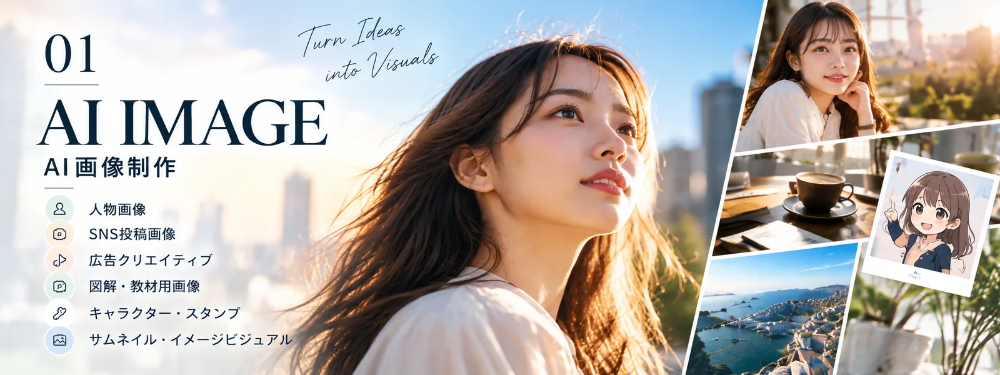
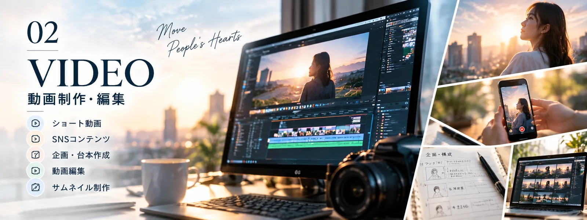
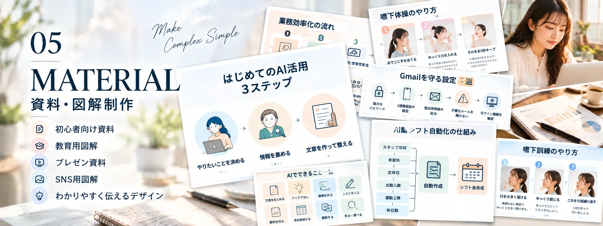
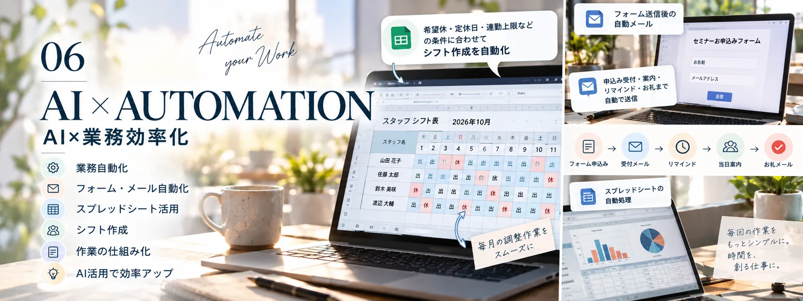
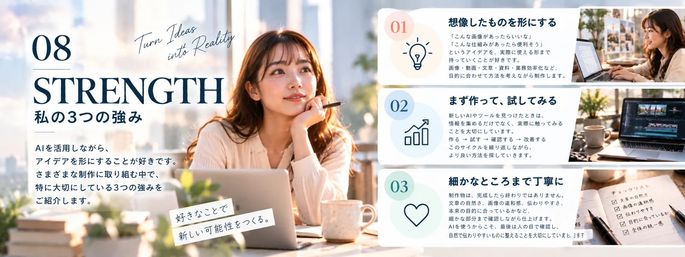
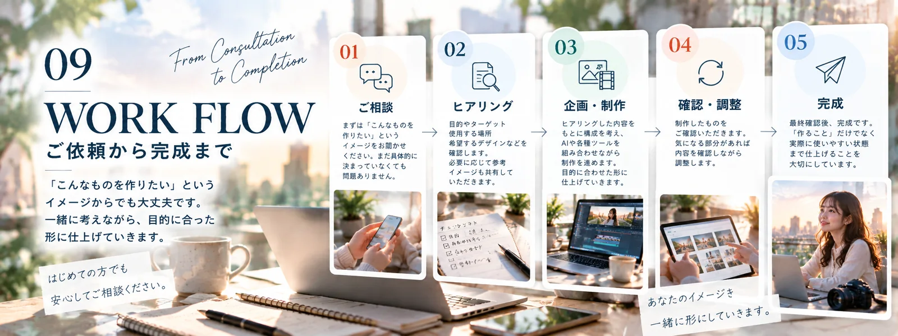

01
AI画像制作
人物画像・SNS画像・サムネイルなど

WHAT I DO

人物画像・SNS画像・サムネイルなど

ショート動画・構成・編集など

記事・投稿文・動画台本など

企画・台本・画像・投稿文など

初心者向け資料・教育用図解など

Googleフォーム・スプレッドシート・GASなど
ABOUT / STRENGTH / PROCESS
会社員として働きながら、AIを活用したクリエイティブ制作に取り組んでいます。実際に作り、試し、改善することを大切にしています。

画像・動画・文章・自動化を組み合わせ、目的に合ったものを形にします。

アイデアを形にする・まず試す・細部まで丁寧に仕上げる。

ご相談 → ヒアリング → 企画・制作 → 確認・調整 → 完成。
SELECTED WORKS

AI画像、動画、SNS、ライティング、図解、業務効率化などの制作例です。掲載画像はコンセプトを伝えるイメージであり、実案件の成果を示すものではありません。
noteの記事を見るCONTACT
画像制作、動画編集、ライティング、SNSコンテンツ、AI活用など、お気軽にご相談ください。
noteへ移動する